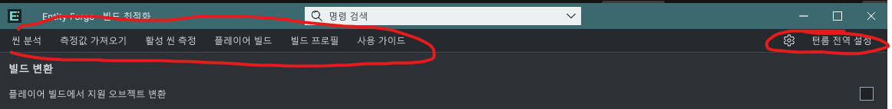

Tracefolio REPORTS & ISSUES
Tracefolio REPORTS & ISSUESEntity Forge 실제 탭 분리와 전역 설정 명칭 정리
검증 대기상단 실행 버튼을 변환·성능 측정·사용 안내 탭으로 교체하고 실행 명령은 본문으로 옮겼습니다. 구현·컴파일 완료, 실제 화면 검증은 보류입니다.
작업 결과
탭을 선택하면 본문 표시와 선택 강조만 바뀝니다. 탭 선택 경로에는 빌드·측정·브라우저·외부 창 호출이 없습니다. 선택 탭은 SerializeField로 보존하며 UI 재구성과 창 이관 때 복원합니다. 왼쪽/오른쪽·Home/End 키 처리도 연결했습니다.
변경 내용
적용 내용
빌드 프로필과 중복 플레이어 빌드 버튼을 창에서 제거했습니다. 씬 분석은 변환 탭, 측정·가져오기는 성능 측정 탭으로 옮겼습니다. 사용 안내는 창 안에 표시하며 브라우저 열기는 별도 버튼입니다. 공통 설정 캡션을 9개 언어에서 브랜드 없는 전역 설정으로 변경했습니다. 전역 설정은 공유 언어와 설치 제품 업데이트를 관리하는 기능입니다.
변환 탭에 메시 배치로 CPU 렌더링 부담을 줄일 수 있다는 설명, 명시적 Forge 동작의 Burst/ECS 사용, 자동 모드의 스크립트·물리 보존과 성능 악화 가능성을 넣었습니다. 측정이 플레이어를 빌드·실행하며 포커스를 바꿀 수 있다는 안내도 본문에 명시했습니다.

사용자 제공 원본입니다. 수정 후 실제 Unity 화면은 사용자의 포커스 금지로 캡처하지 않았으며 전후 시각 비교 완료로 표시하지 않습니다.
검증
실제 Unity 설치본 Roslyn과 참조로 공통 템플릿·Runtime·DOTS·Editor·샘플 Runtime·샘플 Editor·개발 Editor 7개 어셈블리 컴파일 성공. UXML XML 파싱, 고유 이름 32개, 탭 3개와 본문 3개, Inspector 이벤트 대상 존재, 외부 빌드 프로필 바인딩 제거, SelectTab 외부 실행/Close 호출 없음, UI 번역 412항목×9언어 누락 검사 통과. 문서 9개 로컬 링크 126개 및 파비콘 검사 통과. 새 패키지 358개 포함 파일 readback 통과. 검사 근거
남은 사항
현재 창이 닫히는 현상의 정확한 원인은 네이티브 재현 없이 미확인입니다. 탭 선택으로 외부 작업이 실행되던 구조는 제거했으나 창 닫힘 해결의 실제 실행 검증은 미실행입니다. 실제 탭 클릭·키보드·재열기/리로드·라이트/다크·9언어 레이아웃과 수정 후 화면 캡처는 사용자 화면 사용 금지로 보류했습니다. Unity/플레이어/브라우저 GUI를 실행하지 않았습니다. 기존 캡처 해시를 현재 소스 해시로 갱신하지 않았습니다. 교훈 검토: 이번 문제의 명령/탭 구분은 프로젝트 수정에 반영했으며 기존 전역 규칙과 중복되는 새 규칙은 추가하지 않았습니다.
작업 시간
- 제안 시간: 5~10분
- 실제로 완료된 시간: 2026-11-02 16:39:25 KST 시작. 16:44:24 KST 구현·파일 검사·패키지 생성 완료(4분59초). 공개 배포 확인 별도.
- XERJ: 실패 — Xerj.ps1 Status에서 node is not running 확인. rg와 현재 소스·UXML·이벤트 에셋 대조로 대체.